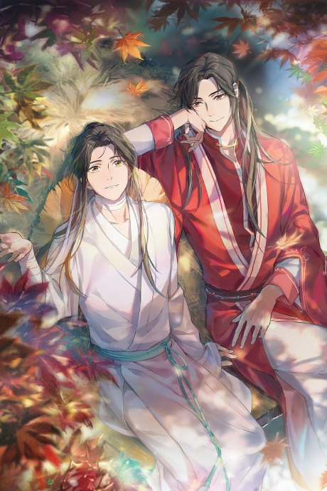

Il primo libro: l'inizio della mia passione
La benedizione dell'ufficiale divino: la terza ascesa
TRAMA:
Ottocento anni fa, nella Pianura Centrale, sorgeva un regno pacifico e prosperoso chiamato Xianle. La sua ricchezza più grande era il Principe Ereditario Xie Lian, un giovane bello, forte e puro, dotato di ogni virtù, da cui ci si aspettavano grandi imprese. Lui, tuttavia, aveva un’unica ambizione: salvare l’umanità. La sua dedizione era stata premiata quando, a soli diciassette anni, era asceso al Regno Celeste come una divinità. Più in fretta si sale, però, più in fretta si torna giù: per ben due volte Xie Lian è stato esiliato dal Cielo e ha trascorso otto secoli nel Regno Mortale, guadagnandosi da vivere tra esibizioni da saltimbanco e accattonaggio.
Ora è asceso per la terza volta, ma ha molti debiti da ripagare per mantenere il suo status divino, così torna tra gli uomini a dare la caccia a fantasmi violenti e spiriti affamati di anime. Qui incontra San Lang, un ragazzo affascinante, con il quale scatta un’immediata sintonia e che appare molto più saggio della sua giovane età. Chiaramente è più di quello che sembra, ma quali misteri si nascondono dietro il suo irresistibile sorriso scanzonato?
Come godersi la storia...
Il romanzo ha riscosso grande successo — motivo per cui è arrivato anche in Italia — e nel tempo ha ispirato numerosi adattamenti. Ci sono quindi tre modi per avvicinarsi a questa serie:
La serie di libri
Si può andare sul classico e optare per i libri, la serie edita da Mondadori è al primo volume...
Il fumetto tratto dalla serie

Ci si può immergere nella lettura dei fumetti (prossimamente da starcomics)
L'anime tratto dalla serie
Se si preferisce lo schermo, Crunchyroll ha entrambe le stagioni
Il gran maestro della scuola demoniaca
Un altro grande successo dell'autrice è la serie "Il gran maestro della scuola demoniaca".
libro
The Untamed
drama
The Master of Diabolism
anime
Grafic-novel